Compliance dashboards
See what's due, overdue and outstanding across the district, whenever you need it.


Marshal tracks every property, classifies its hazard level and schedules inspections at the intervals the fire code requires. Inspectors capture findings in the field, even offline, and every violation is tracked from citation to correction.
Built for municipal and state fire prevention bureaus still working from spreadsheets and paper.

Every property, on the schedule the code sets.
Field work captured once, at the property.
Every violation followed through to the end.
See what's due, overdue and outstanding across the district, whenever you need it.
Attach documents to a property and keep every version.
Standard APIs for GIS mapping, permit databases and emergency response systems.
Field data captured offline syncs when the connection returns, and is never silently dropped.
| Area | Spreadsheets and paper | Marshal |
|---|---|---|
| Due dates | Tracked by hand, easy to miss | Generated from the code for every property |
| Field work | Notes typed up back at the office | Captured on site, even offline |
| Violations | Scattered across files and emails | One record from citation to re-inspection |
| Records | Hard to show what happened | Every change in the audit log |
Tell us how your bureau schedules and records inspections today. We'll show you Marshal set up the same way.